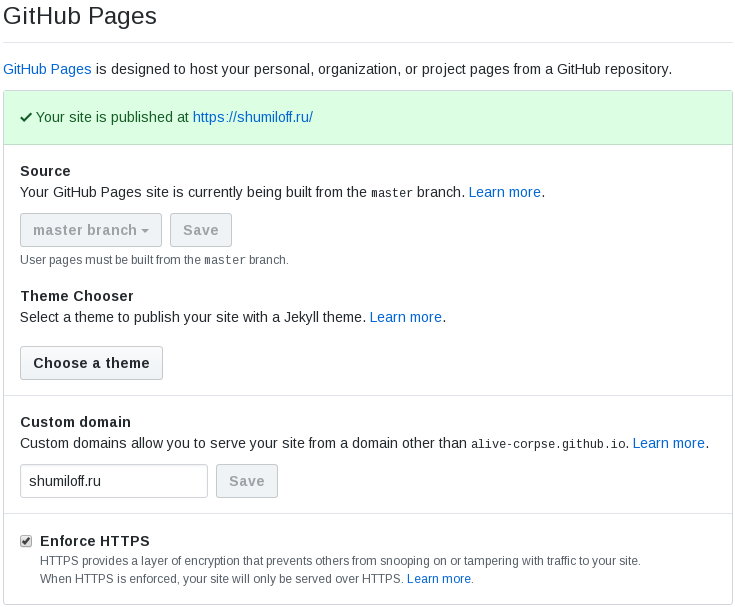

Про внезапный переезд на GitHub Pages

Сегодня ночью случилось сразу несколько событий. Яндекс мигрировал мой домен в Яндекс.Коннект, у меня дома отвалился интернет, а затем выключили и электропитание. Нередкий случай проявления заботы со стороны нашего ТСЖ - нечего ночами сидеть в сети, ложись спать давай, родной. Вот, мы и свет уже тебе погасили. Логичным продолжением было бы отключение воды, отопления, газа и, чего уж там, сразу воздуха, но этого, что меня радует, не последовало.
Через какое-то время мой хороший друг написал в телеграм - мол, блог твой недоступен, на что ласково был обозван "мониторингом мониторинговичем" и примерно в этот же миг снизошло на меня озарение свыше - включили свет и увидел я мир вокруг. И понял я, что это хорошо. Интернет тоже не заставил себя ждать, а вот блог так и остался недоступен. Раньше я бы плюнул на всё и лёг спать, но с мыслью о 52х постах, которые кто-то читает, кто-то даже комментирует, а кому-то, о чудо, и вовсе нравится, я уже уснуть спокойно не мог. Надо было чинить.
Суть проблемы заключалась в том, что мой скрипт не мог обновить DNS записи. Попробовал в качестве эксперимента обновить их вручную и получил ошибку доступа в PDD (Почта для домена от яндекса). Покопался ещё немного и обнаружил, что домен мой благополучно переехал в Яндекс.Коннект и через апи PDD перестал быть доступен. Пришлось после 12 часов на работе изучать ночью документацию API для Яндекс.Коннект. Теперь никаких токенов - авторизация реализована через OAuth 2.0. Переписать быстро и хорошо не получилось бы, там есть свои тонкости. Нужен был альтернативный вариант. Вариантов оказалось три, но изучать их пришлось параллельно, что процесс решения проблемы не ускоряло в текущий момент, но позволяло сделать наиболее оптимальный выбор в перспективе.
Самым простым вариантом, который приходил в голову сразу, было поднять виртуалку и перенести блог туда, просто руками завернув корневую запись домена на белый адрес инстанса. Далее нужно было бы поднять и настроить Nginx, добавить сертификаты от Let's Encrypt, настроить их обновление. Это конечно, надёжнее домашнего сервера на балконе, но мне хотелось чего-то такого, о чём можно было забыть на годы и оно бы не отвалилось. В случае с виртуалкой можно как минимум забыть произвести вовремя оплату. Да и платить каждый месяц дополнительные деньги за то, что работало бесплатно долгое время как-то уже не хотелось принципиально.
Вторым очевидным вариантом было делегирование домена другому DNS хостеру. По вышеупомянутой причине DNS хостинг должен был быть бесплатным и с возможностью изменения записей через API. В ходе поверхностного поиска мне попалась статья на хабре https://habr.com/ru/post/203292/ от ноября 2013го года. Да, статья старая, но с удивлением для себя я обнаружил, что многие хостеры из того списка всё ещё предоставляют свои услуги, а многие из них даже на всё тех же условиях. Так что в этом отношении альтернативы яндексу есть. А ценность статьи за 5 лет пожалуй только увеличилась, потому как даёт представление о том, какие хостеры за этот период успели кануть в лету, а какие прожили 5 лет, что даёт надежду на некоторую стабильность. Впрочем, вариант со сменой DNS так же не был самым удобным - делегирование домена добавляет мороки, а сам процесс может занимать больше суток. А с новым API придётся разбираться всё равно, после чего писать новый скрипт, обновляющий зону.
Ну и третий вариант, на котором я остановился - это так называемый GitHub Pages. Я знал о его существовании, видел страницы, которые хостились таким образом, но не имел ни малейшего представления о деталях. Как оказалось, это самый лёгкий, оптимальный и простой вариант, который вообще можно найти. Я эту статью писал в три раза дольше, чем разбирался с переездом блога на GitHub Pages. Конечно, он поддерживает только статический контент, но это как раз мой случай. Кроме статики на моём блоге нет ничего. Для деплоя необходим только git. Собственно, git push для меня фактически является деплоем. И, что самое приятное, достаточно просто прикручивается свой домен, а https вообще работает из коробки - сам запрашивает и, видимо, поддерживает актуальным Let's Encrypt сертификат. Что вообще нужно для того, чтобы создать свой блог бесплатно без рекламы и смс, не платить за это ни копейки?
0. Регистрируемся на GitHub, если мы ещё этого не сделали.
1. Создаём репозиторий с именем username.github.io, где username - это имя вашей учётной записи на github.
2. Клонируем этот репозиторий куда-нибудь себе:
git clone git@github.com:username/username.github.io.git mysite
Естественно, заменяем username на имя свой, а вместо mysite можно задать любое другое валидное имя директории на ваш вкус.
3. Добавляем контент:
cd mysite
echo '<html><head>
<title>Under construction</title>
</head><body>
<h1>This page is under construction</h1>
</body></html>' > index.html
git add index.html
git commit -m 'Initial commit'
git push origin master4. Идём в настройки проекта (https://github.com/username/username.github.io/settings или кнопка settings с пиктограммой в виде шестерёнки) и ищем раздел с названием GitHub Pages. У меня он выглядит следующим образом:

В поле Source нужно выбрать ветку master и нажать на кнопку Save. Если у вас нет собственного домена, то поле Custom domain нужно оставить пустым. Считайте, что сайт у вас уже есть и доступен по адресу https://username.github.io. Проще точно некуда. Но есть ещё один момент, достойный рассмотрения. Существует такой статический генератор контента как Jekyll. Что это вообще такое? Статический генератор на входе получает текстовые файлы в определённом формате (в нашем случае это Markdown) и транслирует его в html, css, возможно js, используя шаблоны и некие настройки. Про статическую генерацию контента был самый первый пост в этом блоге. Когда я выбирал себе статический генератор, я в том числе рассматривал и Jekyll, но он показался мне слишком громоздким для моих целей, поэтому я свой блог построил на bashblog. Собственно, к чему я начал про Jekyll - дело в том, что он интегрирован с GitHub pages, что позволяет писать статьи сразу в markdown, а при пуше на github, джекилл сам должен траслировать md в html и всё прочее необходимое. Как раз для выбора темы оформления блога пристуствует кнопка Choose a theme. Погружаться в эту тему я не буду, приведу только ссылки на пару годных статей, где подробно описано, с чего начать и как завести блог на GitHub Pages с использованием Jekyll: раз и два. Кстати, для меня было открытием, что Jekyll умеет импортировать статьи из wordpress, drupal и кучи других источников, включая даже rss! Выберете ли вы для себя Jekyll или любой из других статических генераторов контента - решать только вам.
5. В случае, если у нас есть собственный домен, то тут возможны два варианта - либо нам нужно сделать запись типа CNAME, которая будет указывать на наш урл (username.github.io), либо запись типа А, которая должна содержать один из следующих IP адресов (яндекс коннект например не позволяет сделать корневую запись CNAME типа, только типа А):
- 185.199.108.153
- 185.199.109.153
- 185.199.110.153
- 185.199.111.153
Вот тут есть документация, которая поможет разобраться с проблемами, если таковые возникнут. После добавления DNS записи, прописываем наш домен в поле Custom domain и нажимаем кнопку Save. Это автоматически создаст ещё одну ревизию в репозитории, в которой в корень будет добавлен файл с именем CNAME, в содержимом будет имя вашего домена. Этот файл нужен, имейте это в виду.
Меня кто-то спросил - а чего это я мучаюсь, что-то изобретаю, чиню и форкаю, если можно было просто использовать какой-нибудь blogger.com? На то есть несколько причин.
- Хотелось именно статический контент, потому что мне это было интересно.
- Статика имеет куда меньше потенциальных уязвимостей с точки зрения безопасности.
- Статика практически не имеет зависимостей кроме веб сервера. Статику может раздавать что угодно, что чуть умнее утюга. Мой блог может функицонировать на роутере 10ти летней давности. Да и вообще, я люблю минимализм.
- В рамках статики я могу выложить что угодно и в каком угодно виде, могу создать сколько угодно кастомных страниц, отличающихся друг от друга.
Кстати, отличный юзкейс для использования GitHub Pages - сайт визитка с кратким резюме. Просто, бесплатно, без рекламы и намекает на то, что вы как минимум умеете работать с гитом и html, даже если вы считаете себя гуманитарием. :)